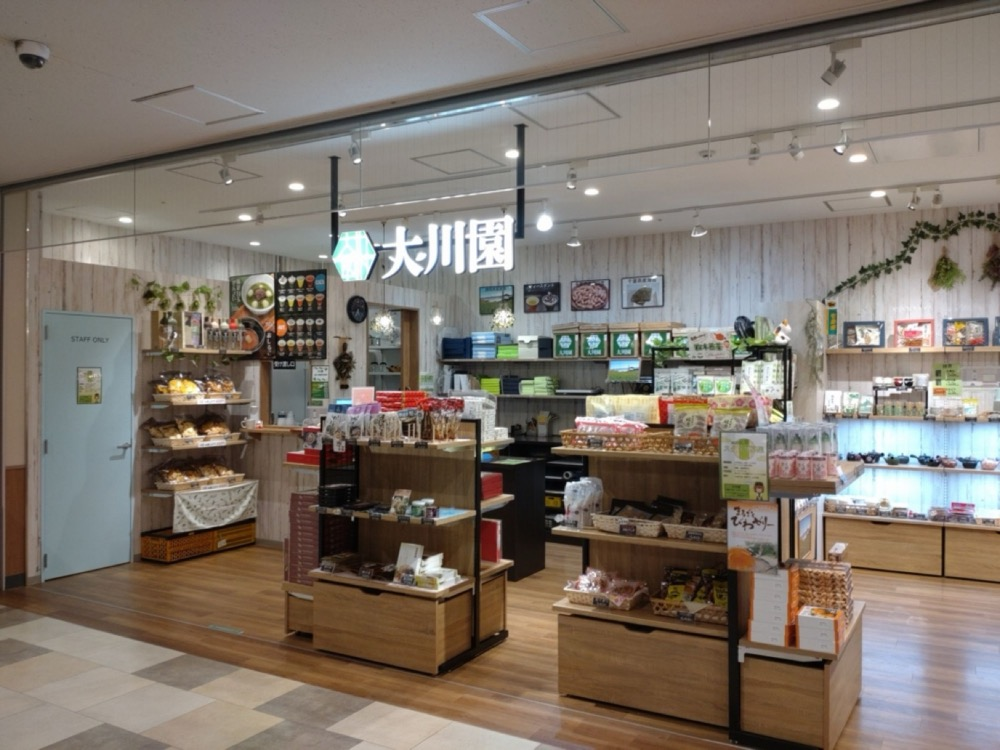
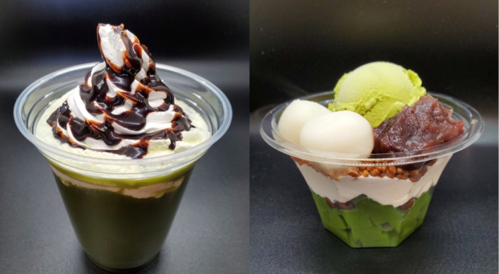
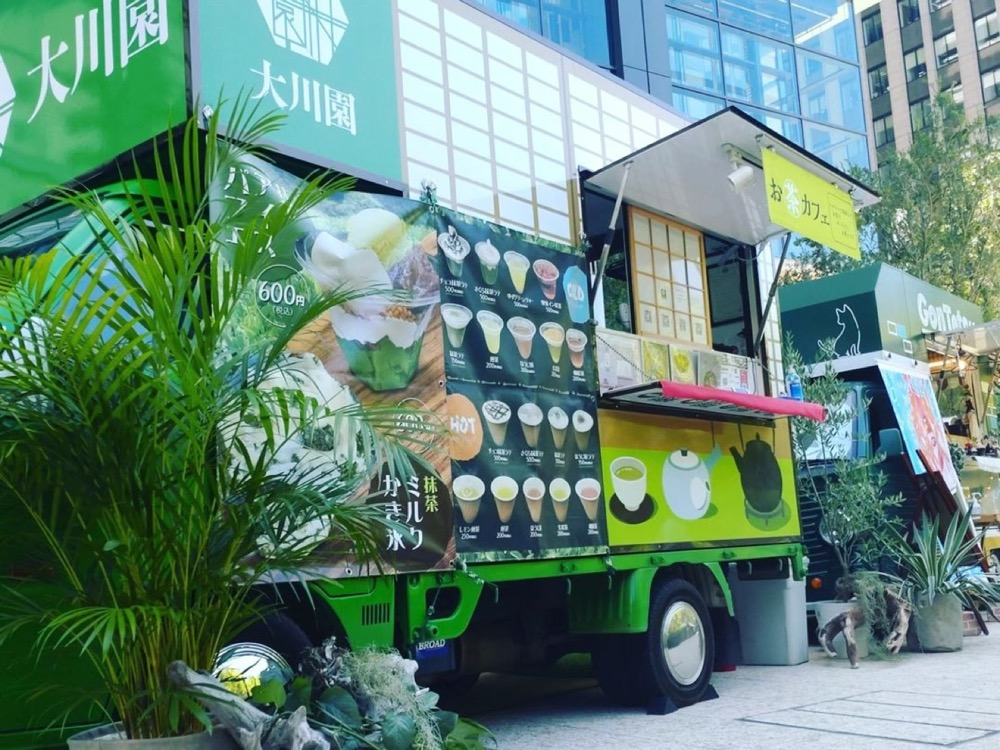

“敷居が高い”お茶屋のイメージを変えるために
大川 雅樹
有限会社大川園 代表
1989年、千葉県立泉高校卒業。1989年、株式会社トムエンタープライズ入社。1991年、有限会社根古谷商会入社。1995年、有限会社大川園を創業。現在に至る。
企業サイトを見るTRACK 01
“敷居が高い”お茶屋のイメージを変えるために

有限会社大川園は、千葉都市モノレール千城台駅に直結しているショッピングセンターイコアス千城台1Fにある、日本茶と千葉県の名産品を販売している専門店だ。店内には日本茶ティースタンドを併設し、若い世代でも気楽に来店できる店づくりをしている。また遠方の方でも気軽にお茶の良さを知ってもらえるよう、キッチンカーで千葉県各所を巡行し、店頭で販売している日本茶やデザートなどを提供している。
敷居が高いお茶屋のイメージを変えたい、そう語るのは代表の大川雅樹氏。彼が語る大川園の未来とは、いったいどんなものなのだろうか。
TRACK 02
過去「らしくないお茶屋」を目指して

高校卒業後、自動車整備会社に数年勤務していた大川代表。父親がお茶屋を経営していたことに影響を受け、1995年に有限会社大川園を創業し千葉県を代表する「お茶屋らしくないお茶屋」を目指したという。
「以前はお茶には煎餅が合うと思い、店舗に煎餅焼き設備を構え、職人が一枚一枚手焼き煎餅をお客様の眼の前でつくって販売していたこともあります。そのときに千葉の米の良さが解り、千葉の環境は素晴らしいと感じました。こうした試行錯誤をいくつも続けて、今の大川園は成り立っていると言っても過言ではないですね。」と明るい声で、大川代表は語った。
